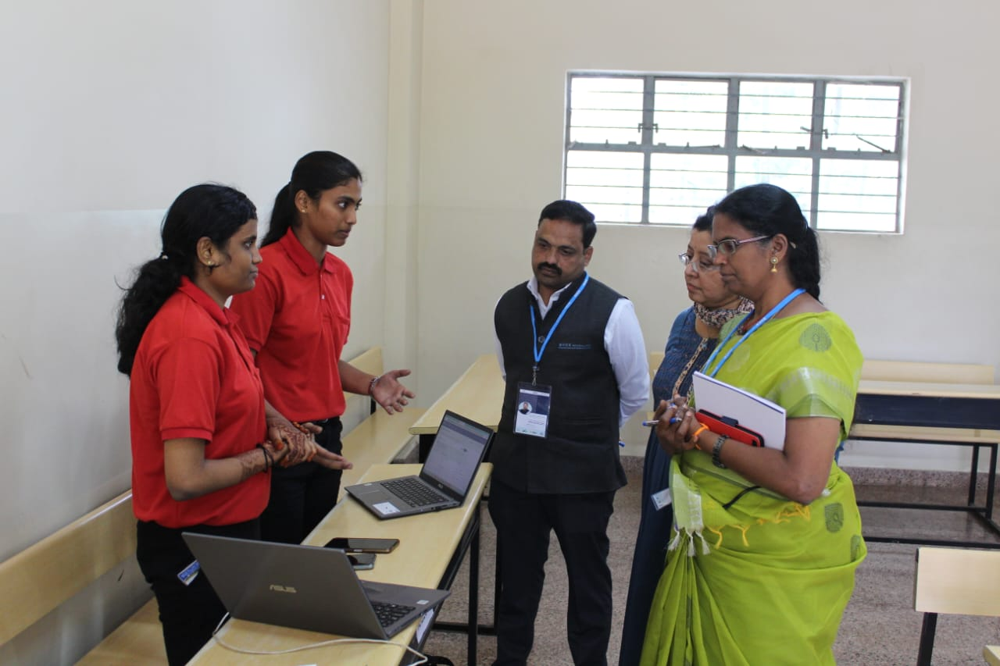
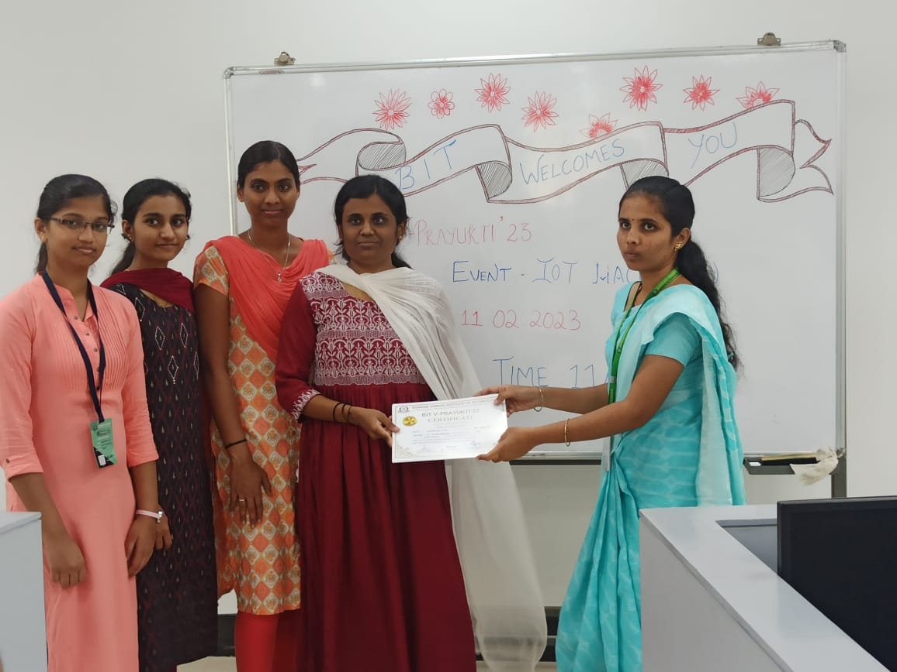

PROJECTS

Project Title: RURAL CLINIC SEARCH ENGINE
Key Features:
- User Registration and Login: The app allows users to create an account and log in securely,
providing access to personalized features and preferences.
- Nearby Doctor Search: Users can search for doctors based on their location, specialty, or specific medical requirements.
The app fetches data from a backend server or APIs to display a list of available doctors near the user's location.
-
Overall, the Doctor Availability Finder built with Flutter offers a convenient and efficient way for users to find and connect with doctors in their nearby location. It combines powerful features, intuitive user interfaces,
and reliable data sources to enhance the healthcare experience for individuals seeking medical assistance.

Project Title: PATIENT MONITORING SYSTEM
Key Features:
- Alert System: The system includes an alert mechanism to notify healthcare providers when certain vital signs exceed predefined thresholds or if any anomalies are detected.
Alerts can be sent via email, SMS, or integrated with a notification system..
- Vital Sign Monitoring: The system uses the Pi Camera to capture images of the patient, allowing for non-invasive monitoring of vital signs such as heart rate, respiratory rate, and body temperature.
Computer vision algorithms are applied to analyze the images and extract relevant information.
-
The Patient Monitoring System using Raspberry Pi and Pi Camera offers a cost-effective and portable solution for continuous monitoring of vital signs in healthcare settings. It enables healthcare providers to track patients' health status in real-time,
facilitates early detection of abnormalities, and improves overall patient care and safety.